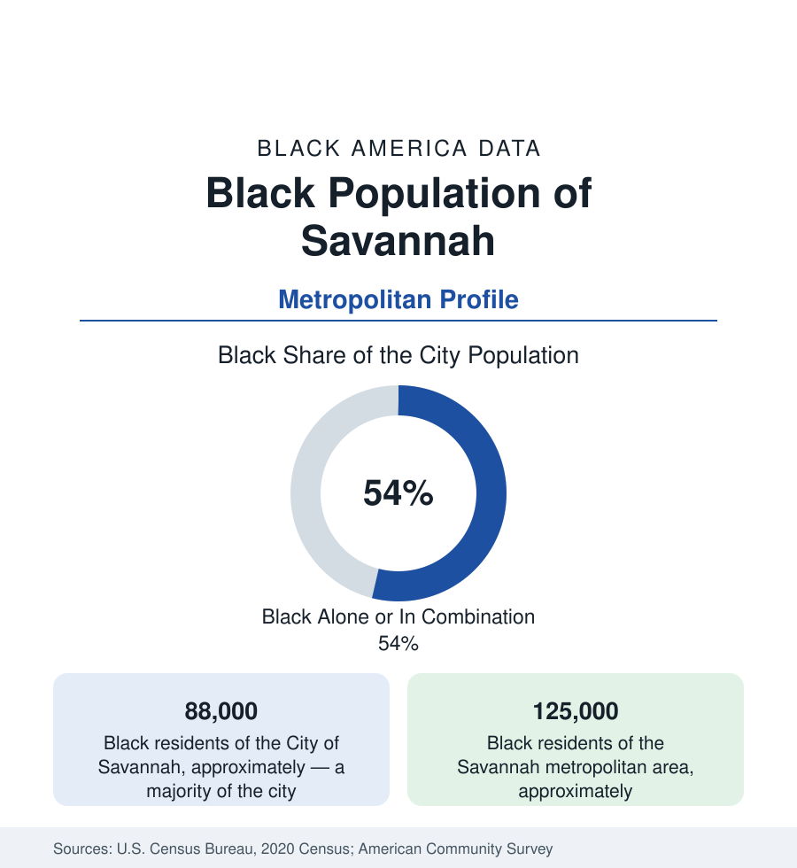

Black Cities
Black Savannah: The Hostess City's First City of the Georgia Coast
Savannah holds about 88,000 Black residents in the city and 125,000 across the metro — from First African Baptist's 1773 founding to the port's modern cranes. The census profile.

Savannah holds about 88,000 Black residents within the city — Black alone or in combination, a majority of its 148,000 people — and about 125,000 across the metropolitan area. The community's claim is chronological: First African Baptist Church, constituted in 1773 under George Leile, stands as the oldest Black Baptist congregation in North America in the standard histories — Savannah's Black institutional life predates the republic, and the modern data of the port city still organize around that depth.
First African, Yamacraw, and the West Side
The geography descends from the founding geography: Yamacraw — the west-side settlement where freedpeople and the working community built the neighborhoods around First African Baptist and the Second African Baptist (from whose steps the 'forty acres and a mule' announcement was read to freedpeople in 1865, in the meeting with Sherman and Stanton the archive preserves); the Victorian district's service world and its Black-owned corridors; Cuyler-Brownsville and the west side's shotgun streets; and the southside growth — the suburban Savannah of Windsor Forest, Georgetown's edges, and Pooler's boom at the county's west — where the modern Black middle class has followed the metro's sprawl. Savannah State University (1890, the state's oldest public HBCU, by the marsh on the city's east) anchors the education map, its Thundering Herd and marine-science programs a coastal distinction; the Ralph Mark Gilbert Civil Rights Museum (named for the NAACP leader who built the Georgia movement's coastal wing) holds the movement's archive in the district where it happened.
The Movement's Coast and the Port's Cranes
Savannah's civil-rights file is a model the historians cite: Gilbert's mass-membership NAACP, Hosea Williams' apprenticeship, W.W. Law's presidency and the disciplined 1960–63 boycott of Broughton Street that desegregated the city largely on the movement's terms and timetable — a negotiated victory the national movement studied. The employment data run through the port: the Georgia Ports Authority's Garden City Terminal — among the nation's largest container ports — whose union longshore and warehouse workforces carry the ILA's Black coastal generations, alongside the tourism economy (the historic district's hospitality workforce, substantially Black, in the hotels and kitchens of the tourist millions), Gulfstream's aerospace plant (the business-jet factory's skilled workforce), Hunter Army Airfield's garrison tier, and the healthcare systems. The indicators show the coastal spread: legacy poverty in the west-side tracts with some of the state's most documented environmental exposure files (the west side's industrial adjacency, the community's organizing record), homeownership rooted in the southside, and the Gullah-Geechee corridor's cultural data running down the coast from the city's edge — the Sea Island heritage whose institutional home (the Geechee Kunda and the island communities) the metro's Black story flows into.
The education lineage deserves its own paragraph in this profile because Savannah built it early: the Beach Institute (1867, founded by the American Missionary Association for freedpeople, now the African-American Cultural Center), the Carnegie Library on East Henry (1914, one of the era's Colored Carnegie libraries, its reading room a Jim Crow-era university), and the line running from the freedmen's schools through Savannah State's founding to the modern district's data. The port's modern file adds the newest numbers: the terminal's expansion phases have made logistics the metro's growth sector, the ILA locals' hiring halls the institution where the coastal Black workforce's generations register — and the warehousing corridor up the Savannah River in Effingham and Bryan counties (the distribution-center belt serving the port) has become the employment frontier the commuting data now trace from the west side's neighborhoods outward each morning.
Change and the Estimates
The estimates show a metro booming on the port and the Hyundai plant rising in Bryan County — the EV factory's thousands of jobs reshuffling the coast's labor data — its Black population growing in count, its share diluted by the suburban and in-migrant growth, and its gentrification file (the historic district's prices pushing the service workforce outward; the west side's revival plans and land trusts) as the current tension. The school data (Savannah-Chatham's district, majority-Black enrollment) and the port's expansion phases keep the employment ledger moving; the islands (Tybee's service workforce commuting in) and the annexation-era neighborhoods complete the map.
Reading the Savannah Numbers
Savannah's 125,000 metro Black residents hold the deepest founding claim in this section — a church from 1773, a forty-acres announcement from its sister church's steps, a movement that won its boycott, and a port whose cranes now pay the grandchildren. The Hostess City's majority is not a demographic turn. It is the original population, still hosting.
More in Black Cities
Black Atlanta: Population, Distribution, and Growth of a Black Metropolis
Metro Atlanta holds more than two million Black residents — roughly one in three, second only to New York. The suburban distribution, migration history, and composition of Black Atlanta in the census data.
Black New York: The Largest Black Population in America
The New York metropolitan area holds about 3.4 million Black residents — more than any metro in the nation — and the city itself about two million. The census profile.
Black Washington: The District and the Metro
The Washington metro holds about 1.6 million Black residents, and the District itself — long a majority-Black city — now records a Black share near 41 percent. The census profile.
Source: U.S. Census Bureau, 2020 Census; American Community Survey; Population Estimates Program.